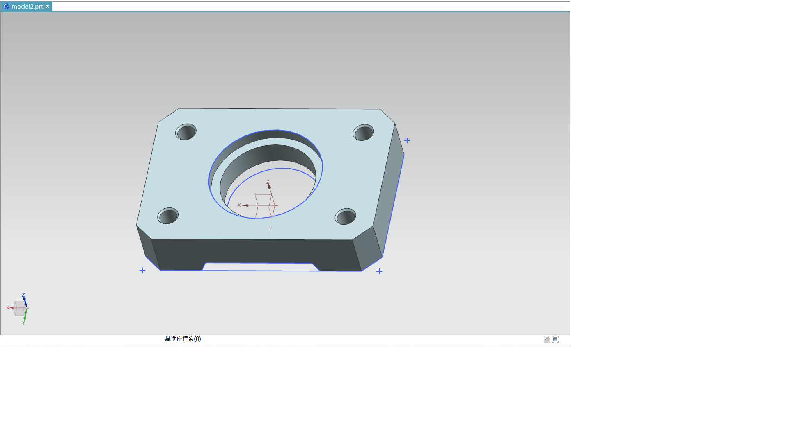

week10 - 14 <<
Previous Next >> SolidWorks-1
week10
本周重點:創建分組倉儲，組長利用fork將組員加入，組員利用pull requests參與倉儲作業
Fork倉儲
正向pull request:無權組員修改過的檔案經由new pull request，向組長提出申請，經組長確認檔案無誤後進行衝突合併，若無權組員檔案版本過舊將在提出申請前即被擋下.
反向pull request:無權組員檔案版本過舊時，將new pull request反向回推至個人分支進行更新.更新也可透過(git pull "你fork的倉儲")
操作影片:
推送流程:
git pull "fork倉儲網址">開啟近端修改其內容>關閉近端>git add .>git commit -m "修改版次">git push>到自身分支提交new pull request>待組審核後才會呈現在版面上.
Solidworks 和 NX 繪圖練習 :
Solidworks : 吳沛汶/邱倚瀅/林承治/劉子源 /蔡育灃
NX : 杜玗宸/林志豪/黃俊翔 /趙子德
Solidworks 和 NX 繪圖差異分析 :
40723201 吳沛汶
Solidworks繪圖練習 : https://youtu.be/d4LuR_vzE1E
Solidworks 比較適合新手使用，這個軟體相比 NX 要簡單很多，最容易上手。
NX 這個軟體的功能也很強大，而且它的曲面功能現在也越做越好，但是它的軟體介面並不是很友好，特別是工具條，初學者看著會特別亂，工具有時候找很久找不到。
40723204 邱倚瀅
Solidworks繪圖練習 https://youtu.be/NCWQq-12Jwc
Solidworks和NX差異性分析
草圖模式 : Solidworks建立草圖模式分為草圖繪製和3D草圖。NＸ分為草圖和在任務環境中繪製草圖。
草圖平面：Solidworks是直接選擇草圖平面，NX在創建草圖時會提示你是選擇現有平面還是創建平面。
參數化：Solidworks是直接定義幾何關係。NX有尺寸約束與幾何約束。
以約束來說，NX可以通過標註直接約束。Solidworks則無此指令。
優點 :
Solidworks : 以初學者來說Solidworks相比NX來的容易上手，Solidworks較簡單易學，界面清晰簡潔，具備機械傳動結構建模等基礎功能，適合初階機械設計。
NX : 適用於模具設計、NC加工、複雜零件、曲面，做複雜零件和裝配修改非常方便，操作人性化可同步建模。
缺點 :
Solidworks : 功能局限性大，只是一個參數化建模，不能做變量化方程的設計，曲面建模較差，模具、限元、運動力學方面相比NX要差。
NX : 導出的圖檔不利於尺寸參數二次修改，較複雜難上手。
40723213 杜玗宸
40723215 杜彥霆
40723218 林志豪
1.NX繪圖練習
2.Soildworks/NX 各自簡單分析差異性
Soildworks介面較整齊，使用起來操作較為簡單，適合繪圖初學者使用，在業界受到廣泛使用，但是曲面建模以及模具方面較差。
NX的介面較為凌亂，使用起來比較難上手，但是適合用於模具方面加工以及複雜曲面
40723219 林承治
40723237 黃俊翔

NX繪圖練習:https://www.youtube.com/watch?v=BererErCwgc&feature=youtu.be
40723242 趙子德
NX練習:
soildworks/nx分析
3D曲線支援能力:支援3D曲線，2D/3D線各別獨立.
平面及軸向鎖定：按tab鍵可切換繪製平面簡單方便，直線可鎖定軸向.
鎖點能力：一般，很多情況下需要使用relation幫忙定位還好他提供直接在3D線模式下建立補助平面，算是就比較麻煩一點但還能接受.
3D曲線編輯
基本上SWX的曲線打上兩個端點之後產生的是一個3 dregree的曲線，含端點總共4個控制點，SWX曲線的handler可獨立調整切線方向或是切線延長切線影響範圍，在同類軟體裏面算是相當的好用的調整方式，同時也可以打開控制點的顯示，直接修改控制點的位置，缺點的話就是他的handler若只想針對單一平面調整會有些困難，經常可以看到一些示範影片中調整了上視圖的曲線之後側視圖的就跟著跑掉，一直來回調整，另外調整handler時經常造成閃退，以及handler經常無故消失無法操作是比較頭痛的問題，還有一點比較奇怪的是在開啟遠近透視的情況下，從上視圖拖曳點移動，會發現連垂直位置也受到影響.
曲面生成及修改
SWX的曲面生成介面非常好用，可任意不按順序修改構成曲線也可以選擇截斷曲面的位置，這點可大幅減少配合曲面截斷曲線的需要合併線段選擇能力：SWX的Selection Manager也是一個相當好用的功能可以選擇合併不同線段來構成曲面，也是其它軟體比較缺乏的設計，但他的Selectin Manager操作上還是略嫌煩瑣就是。
連續曲率能力(G1/G2/G3..等)
基本上都可支援到G2
– 特有建模方式：應該沒有
– 分析工具
Curvature/Zebra都相當方便易用.
顯示能力
曲面反射顯示：開啟顯卡Realview功能後可直接在視圖顯示反射，速度上還算不錯，相當的實用。但缺點是即使作適當調整後仍稍有些過曝感覺.
即時視圖渲染：即時視圖不支援ray tracing，不過其實也不太需要就是.
操作介面
指令圖示：功能清楚，安排容易上手.
分割視圖：可切換分割.
快速視角切換：沒有切換視角的小方塊，需要用工具列切換比較不直覺
平移旋轉操作：中鍵旋轉，似乎無法自定右鍵功能.
執行順暢度
硬體需求：繪圖時CPU佔用比其它軟體來的高，隨便畫個曲線都能聽到CPU風扇起飛的聲音。
軟體穩定度：不佳，經常遇到閃退情況。
閃退時自動回復功能經常失效，或是乾脆完全都不作用，造成工作進度的損失。
奇怪的問題不少，使用上的體驗並不是很好。
優點
1. 硬體效能夠強，可以處理幾千件零組件的計算與畫面移動、旋轉等動作
2. 軟體能順暢處理大型組合件
3. 市購品廠商提供3D CAD模型
缺點:
機械設備的零組件少量多樣，不適合大量製造的製程，基本上都是以車、銑、鑽、磨為主，連放電跟線切割都要避免(成本考量)，形狀通常不會太過於複雜，少數會用到鑄造，形狀已經算比較複雜，包括必需考慮脫模角度，所以一般來說，設備零件考慮到加工製造的的成本效益很少會用到曲面。
相對消費性產品考慮量產與外觀，零件製造方法會以鈑金沖壓、塑膠射出為主，
需要公母模的布林計算、鈑金展開、沖壓模或射出模設計，這些都需要用到複雜的形狀與曲面能力，這也是ProE在主要市場消費性電子產品設計上，軟體功能強項發展多在複雜的零件形狀設計(曲面)，以提供外觀設計跟大量製造的模具所需；但是這些曲面、模具設計功能到了機械設計用途就變成一無是處。
40723243 劉子源
1.文件格式:NX的文件格式為.prt；SolidWorks的文件格式為.sldprt。
2.建立草圖方式:NX分為草圖和在任務環境中繪製草圖；SolidWorks分為草圖繪製和3D草圖。
3.草圖平面:NX在創建草圖時會提示你是選擇現有平面還是創建平面；而SolidWorks是直接選擇平面，如果想選擇創建的平面就需要提前創建。
4.參數化:NX分為尺寸約束和幾何約束。繪製草圖時也應該儘量做到完全約束。如果欠約束，NX會告訴你欠幾個約束。如果過約束，NX也會提示。SolidWorks的說法是定義，也需要添加幾何關係，其實道理是一樣的，如果欠定義的話，線的顯示顏色不一樣，但不顯示欠幾個定義。不欠定義的話就是完全定義。
5.快速約束的方式。如下圖，在NX中連續單擊線1，線2，會出現一個臨時的約束工具條，選擇需要的約束即可。
sodiworks繪圖練習:https://www.youtube.com/watch?v=0mVgqw164PI
<<<<<<< HEAD
40723245 蔡育灃
week10 - 14 <<
Previous Next >> SolidWorks-1